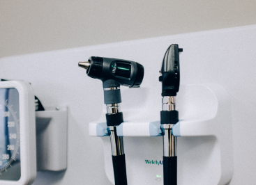

У нас работают молодые и амбициозные специалисты, настоящие фанаты своего дела. Вы гарантированно попадете к грамотному и профессиональному врачу. Уютная и спокойная обстановка в нашей клинике позволит Вам максимально расслабиться и получить в итоге великолепный результат!

Почему нужно вовремя
протезировать зубы?
Современная стоматология направлена на сохранение любого, даже самого проблемного, зуба.
Целостность зубного ряда важна не только с точки зрения эстетичного внешнего вида и красивой улыбки.
Целостность зубного ряда важна не только с точки зрения эстетичного внешнего вида и красивой улыбки. Отсутствие одного или нескольких зубов – это потенциальная угроза разрушения тех, что остались.
Целостность зубного ряда важна не только с точки зрения эстетичного внешнего вида и красивой улыбки.